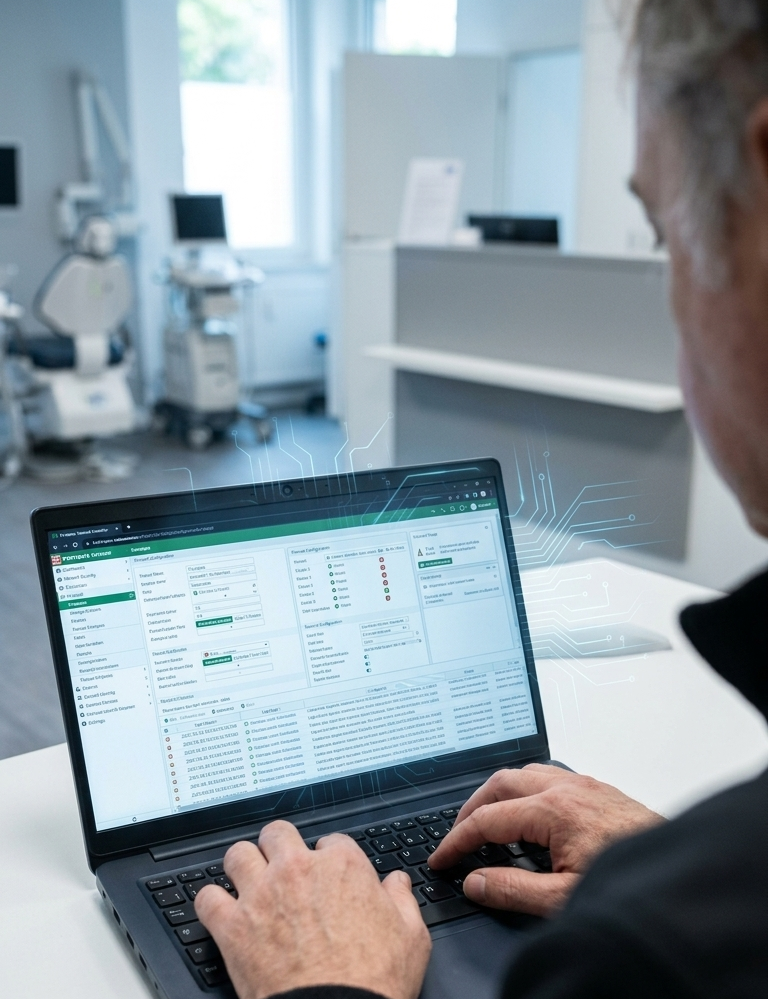
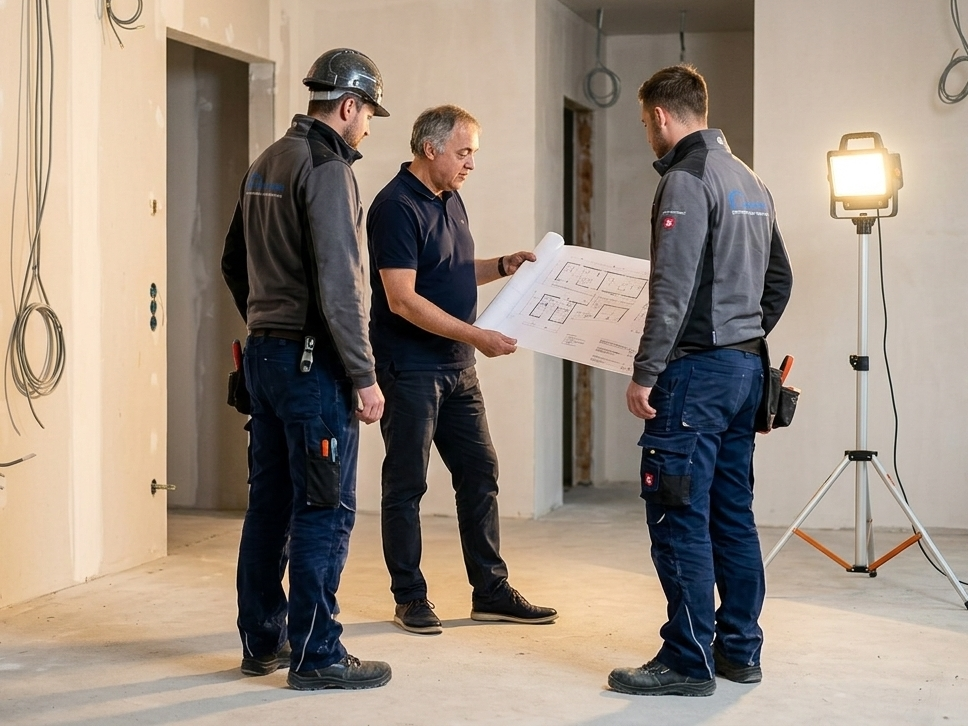

Über 25 Jahre System-Erfahrung
davon 18 Jahre Field Service an 400+ Standorten im regulierten Bankenumfeld. Mein Fokus liegt auf Betreuung und Aufbau komplexer Infrastrukturen, von On-Premise Rechenzentren über Netzwerk und Serverräume bis zur Koordination angrenzender Gebäudetechnik bei Standortprojekten.

Praktische Expertise, Handwerk & Umsetzung
Abgeschlossene Tischlerlehre und eigenständige Planung und Realisierung meines Einfamilienhauses, inklusive Gewerke-Koordination, Kalkulation und Beschaffung. Gesamte Hauselektrik sowie ein Balkonkraftwerk in Eigenregie verlegt und montiert, den Stromverteiler bewusst von einem konzessionierten Elektriker ausführen lassen.

Innovative Arbeitsweisen & KI-gestützte Umsetzung
Gezielter Einsatz moderner KI-Tools zur Effizienzsteigerung, Problemlösung und DSGVO. Laufende Evaluierung führender Modelle und Architekturen – von strukturierter Prompt-Mechanik über Claude Code bis hin zu lokal betriebenen Systemen via LM Studio und Ollama (z. B. Hermes). Der Fokus liegt nicht auf theoretischer Informatik, sondern auf dem praktischen Nutzen für Systemadministration, Skripting und Datenschutz.

Freiberufliche IT-Projekte und Weiterbildung seit Juli 2024
Konkrete Anwendung in der Praxis: KI-gestützte Log-Analyse zur schnellen Fehlersuche in Fortigate-Firewall- und Unifi-Switch-Protokollen einer Arztpraxis. Eigenständige Konzeption und Umsetzung produktiver Webprojekte wie schachburg.at und os-hausbetreuung.at (Vibe-Coding) sowie die Entwicklung von Handelsindikatoren in MQL5 für MetaTrader 5.
Persönlicher Antrieb
Die IT bleibt für mich ein faszinierendes Werkzeug. Für meine berufliche Zukunft wünsche ich mir jedoch eine Aufgabe mit mehr Bewegung, Abwechslung und direkt sichtbaren Ergebnissen.
Mich motiviert es, draußen zu arbeiten, anzupacken und gemeinsam im Team einen spürbaren Beitrag für die Gemeinde und die Bevölkerung zu leisten. Meine IT-Erfahrung bringe ich dabei als strukturierte Problemlösungskompetenz mit ein.

Qualifikationen & Werdegang
💻
IT-Infrastruktur & Netzwerke
▼
08.2018, 06.2024: IT-Techniker & Netzwerk-Administrator
Betrieb eines On-Premise Datacenters mit 120 virtuellen Windows-Servern via VMware ESX, Active Directory, Aruba/HPE Switches, Barracuda Firewalls und VLAN-Segmentierung. Alleinverantwortlicher IT-Einkauf, Lagerhaltung vom Smartphone bis zum TOR-Switch, Koordination von Rittal-Klimasystemen und USV-Anlagen.
01.2000, 05.2017: IT Field Service Techniker | Finanzsektor
Vollstack-Störungsbehebung und Hardware-Troubleshooting an 400+ Standorten gesamt unter Zero-Downtime-Anforderungen, inklusive Komponentenreparatur, Strukturverkabelung, Rack-Installation und Client-Rollouts im hochsensiblen Bankenumfeld (Zürich, Frankfurt, Österreich).
🏗️
Gebäudetechnik & Projektierung
▼
Federführende Planung und Umsetzung von 3 bis 4 Standortaufbauten pro Jahr inklusive Steuerung externer Handwerker und Lieferanten. Integration digitaler Dormakaba-Schließsysteme (Mitarbeiterausweis als Zutrittskarte, Fuhrpark-Freischaltung) und Einbindung von Rufsystemen.
🎚️
Medientechnik & Event-Infrastruktur
▼
Langjährige Erfahrung in der analogen Veranstaltungstechnik (Licht, Ton, Signalwege), erfolgreich transferiert in die digitale Ära. Fundiertes Verständnis für netzwerkbasierte Audio-Lösungen (Dante, AV-over-IP) und softwaregestützte digitale Mischpulte an der direkten Schnittstelle zur IT-Infrastruktur.
🎓
Ausbildung & Weiterbildung
▼
Netzwerk-Administrator Zertifikat (WIFI), Agiles Projektmanagement, PC-Techniker (BFI), Erweiterter Ersthelfer (Rotes Kreuz), abgeschlossene Tischlerlehre.